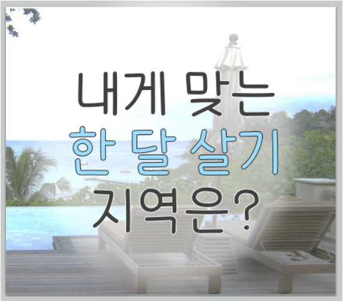

한달 살기! 내 MBTI와 맞는 도시는?
코로나만 끝나라! 어디로 가볼까?
내게 맞는 한달 살기 추천 테스트 시작!
결과 계산 중...
문제
대답A
대답B
당신의 MBTI에 맞는 한달 살기 지역은 바로...!
MBTI
설명
부가설명
순위2
순위3
최고궁합
최고여행지
최악궁합
Copyright 2021 Tikiwiki all rights reserved

 당신의 MBTI에 맞는 한달 살기 지역은 바로...!
당신의 MBTI에 맞는 한달 살기 지역은 바로...!